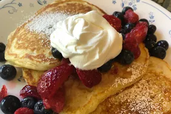

Every bite makes you feel like you're on cloud 9 😍⛅
Description
Need a fluffy pancake recipe? This one is just right, especially when there's plenty of butter and syrup.
Make it extra special with berries and cream!
Ingredients
¾ cup milk
2 tablespoons white vinegar
1 cup all-purpose flour
2 tablespoons white sugar
1 teaspoon baking powder
½ teaspoon baking soda
½ teaspoon salt
1 egg
2 tablespoons butter, melted
cooking spray
Directions
Steps:
Combine milk and vinegar in a medium bowl and set aside for 5 minutes to make sour milk.
Combine flour, sugar, baking powder, baking soda, and salt in a large mixing bowl. Whisk egg and butter into soured milk. Pour flour mixture into milk mixture and whisk until lumps are gone.
Heat a large skillet over medium heat, and coat it with cooking spray. Pour 1/4 cupfuls of batter onto the skillet, and cook until bubbles form and the edges are dry, about 2 to 3 minutes. Flip with a spatula, and cook until browned on the other side. Repeat with remaining batter.